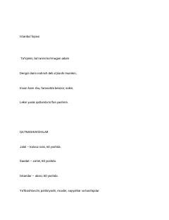

IFIstanbulga sayohat qilgan o'zbek sayyohlarining taqdiri va fojiali qismati haqidagi asar.
Ushbu asar Istanbulga sayohat qilgan bir guruh o'zbek sayyohlari va Iskandar ismli qahramonning fojiali qismati haqida hikoya qiladi. Muallif Vatan sog'inchi, insoniy xatolar va hayotiy armonlar mavzularini qalamga oladi.